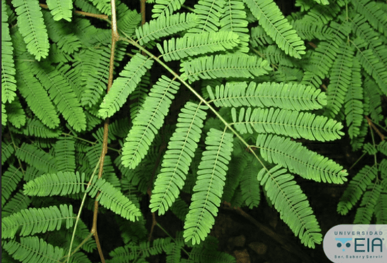

Dividivi
Caesalpinia coriaria
Árbol resistente a climas secos.
Ayuda a prevenir la desertificación.
Dato curioso.
La región Caribe posee ecosistemas únicos como manglares y bosques secos tropicales.

Caesalpinia coriaria
Árbol resistente a climas secos.
Ayuda a prevenir la desertificación.
Dato curioso.

Rhizophora mangle
Planta costera protectora.
Refugio para fauna marina.
Dato curioso.

Opuntia ficus-indica
Planta adaptada a zonas secas.
Conserva agua en su interior.
Dato curioso.